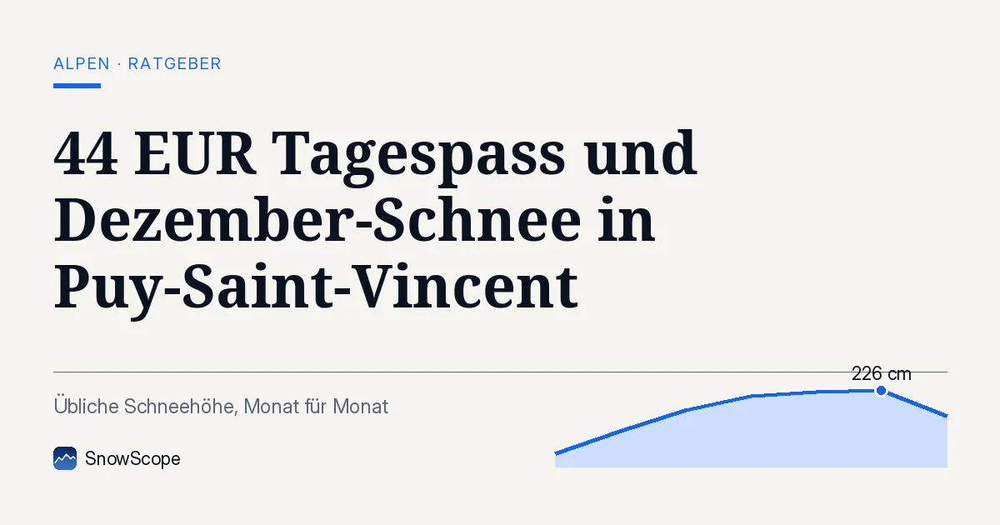

44 EUR Tagespass und Dezember-Schnee in Puy-Saint-Vincent
Für 44 EUR pro Erwachsenen-Tagespass ist Puy-Saint-Vincent ein günstiger Einstieg ins Skifahren im Dezember in den Écrins. Obwohl die Basis auf 1.411 m früh im Winter oft wenig Schnee hat, zeigt unsere Schnee-Historie eine zuverlässige Schneedecke ab der Mittelstation. Hier ist der Vergleich mit Serre Chevalier.
Die Live-Schneeprognose für Puy-Saint-Vincent in der SnowScope-AppSchneehöhen, Pulverschnee-Alarme und 3D-Karte, gratis.
Ein 44 EUR Pass auf einem kompakten Berg
Für den Winter 2026-27 kostet der offizielle Erwachsenen-Tagespass in Puy-Saint-Vincent 44 EUR. Das umfasst ein Skigebiet von 42 km Pisten und 12 Liften, von 1.411 m bis 2.664 m mit 1.253 m Höhenunterschied.
Ein kompaktes Gebiet macht einen kurzen Dezember-Trip einfach und bezahlbar. Die Frage ist, wie gut der Naturschnee in jeder Höhe vor Januar hält.

Drei Höhen, drei Dezember-Schnee-Geschichten
An der Talstation (1.411 m) ist der Schnee im Dezember oft dünn. In unserer Schnee-Historie von 46 Wintern (1980-81 bis 2025-26) liegt die übliche Tiefe im Dezember bei 19 cm, fällt in 1 von 10 Wintern unter 5 cm und übersteigt in 1 von 10 Wintern 39 cm.
Weiter oben baut sich die Decke schnell auf. Die Mittelstation (2.037 m) hat im Dezember im Schnitt 55 cm, mit 1 von 10 Wintern unter 21 cm und 1 von 10 Wintern über 96 cm. Am Gipfel (2.664 m) erreicht der Dezember üblicherweise 106 cm (44 cm bei wenig Schnee, 185 cm bei viel Schnee).
Wann im Dezember der Schnee hält
Wochenweise Zahlen zeigen, wann du buchen solltest. An der Basis (1.411 m) gibt es 30 cm oder mehr in 15 % der vergangenen Winter vom 1.-7. Dezember, 20 % vom 8.-14. Dezember, 28 % vom 15.-21. Dezember und 33 % vom 22.-28. Dezember, während 50 cm oder mehr nur in 0 %, 2 %, 7 % und 9 % vorkommen.
An der Mittelstation (2.037 m) hält sich eine Schicht von 30 cm oder mehr in 61 % der Winter vom 1.-7. Dezember, steigend auf 76 %, 89 % und 93 % in den folgenden drei Wochen. 50 cm oder mehr steigen von 35 % und 46 % auf 54 % vom 15.-21. Dezember und 70 % vom 22.-28. Dezember. Am Gipfel (2.664 m) erreicht die 30-cm-Marke 98 % vom 1.-7. Dezember und danach 100 %, während 50 cm oder mehr bei 74 %, 85 %, 93 % und 96 % liegen.
Gegen den großen Nachbarn Serre Chevalier
Serre Chevalier ist viel größer, mit 157 km Pisten und 70 Liften von 1.219 m bis 2.765 m (1.546 m Höhenunterschied). Die offizielle Seite listet einen 6-Tage-Pass für Erwachsene für 276,00 EUR bis zum 18. Dezember 2026 und 345,00 EUR vom 19. Dezember 2026 bis zum 1. Januar 2027. Puy-Saint-Vincent bietet hier nur den 44 EUR Tagespass, passend für kurze Trips.
In unserer Historie hat Serre Chevalier an der Basis (1.219 m) mehr Schnee, im Schnitt 30 cm im Dezember (8 cm wenig, 59 cm viel), mit 30 cm oder mehr in 30 %, 41 %, 52 % und 67 % der Winter. Weiter oben sind beide nah beieinander: Serre Chevalier hat im Schnitt 58 cm an der Mittelstation (1.992 m; 24 cm wenig, 103 cm viel) und 111 cm am Gipfel (2.765 m; 50 cm wenig, 192 cm viel), mit 30 cm oder mehr in 65 %, 83 %, 93 % und 96 % der Winter an der Mittelstation und 50 cm oder mehr in 78 %, 87 %, 96 % und 96 % am Gipfel.
Erster Schnee, Trends und frühe Anzeichen
Der letzte Winter (2025-26) hatte einen moderaten Dezember-Schnitt in Puy-Saint-Vincent: 12 cm an der Basis, 42 cm an der Mittelstation und 91 cm am Gipfel. Der erste dauerhafte Schnee kommt üblicherweise am 30. Oktober an der Basis, am 26. Oktober an der Mittelstation und am 13. Oktober am Gipfel. Beim Vergleich der ersten 15 Winter (1980-81 bis 1994-95) mit den letzten 15 (2011-12 bis 2025-26) stiegen die Dezember-Durchschnitte von 13 cm auf 23 cm an der Basis, von 42 cm auf 60 cm an der Mittelstation und von 87 cm auf 114 cm am Gipfel. Dünne Extreme erreichten 0 cm an der Basis 1998-99 (13 cm Mittel, 38 cm Gipfel 2015-16), während 1996-97 52 cm, 114 cm und 199 cm erreichte.
Als Zeichen für den Start dieser Saison liegt die heutige Schätzung am 13. November 2026 bei 0 cm an Basis und Mittelstation und 11 cm am Gipfel, mit geschätzten 0 cm, 37 cm und 70 cm Neuschnee in den nächsten sieben Tagen. Für den 13. bis 26. November 2026 gibt der Zwei-Wochen-Ausblick ab der Mittelstation eine Vorhersage von 69 cm bis 108 cm (89 cm Mitte).
Tipps für Skifahrer
- Ziele auf den 15.-21. oder 22.-28. Dezember ab, wenn die Wahrscheinlichkeit für 50 cm oder mehr an der Mittelstation (2.037 m) auf 54 % und 70 % der vergangenen Winter steigt.
- Fahre hauptsächlich zwischen Mittelstation (2.037 m) und Gipfel (2.664 m), da die Basis auf 1.411 m im Schnitt nur 19 cm hat.
- Prüfe den Lawinenlagebericht vor dem Fahren abseits der Piste, besonders in der Höhe, wo der Dezember-Schnee 106 cm erreicht.
- Buche den 44 EUR Tagespass auf der offiziellen Seite von Puy-Saint-Vincent oder vergleiche ihn mit dem 276,00 EUR 6-Tage-Pass von Serre Chevalier für Anfang Dezember.
Weitere Karten (externe Seiten)
Quellen und Nachweise
- Puy-Saint-Vincent, official ski pass prices 2026-27 www.puysaintvincent.com/forfait-ski-puy-saint-vincent
- Serre Chevalier, official booking site, ski passes 2026-27 reservation.serre-chevalier.com/achetez-vos-ski-pass-serre-chevalier-et-autres-prestations.html
- SnowScope, December snow at three heights and today's snow map snowscope.app/
Zu diesen Zahlen
Schneewerte: SnowScope-Schneehistorie, 46 vergangene Winter (1980-81 bis 2025-26) auf drei Höhen jedes Skigebiets (ein höhenkorrigiertes Modell der Vergangenheit: eine Schätzung für eine Fläche, keine Messungen des Skigebiets); Dezemberwerte aus den täglichen Schneehöhen dieser Winter. Aktueller Schnee und Zwei-Wochen-Ausblick: SnowScope-Prognosen (Ausblick aus ECMWF und GFS, eine Spanne, kein Versprechen). Lifte und Pisten: OpenSkiMap-Kartierung. Preise: die offiziellen Seiten unten, gelesen am 2026-11-13; Preise können sich ändern, vor der Buchung prüfen.
Offizielle Lawinenlageberichte: Météo-France – Bulletin d'estimation du risque d'avalanche
Diesen Bericht zitieren
Für Forschung, Lehre oder Presse: Zahlen und Grafiken sind unter CC BY 4.0 mit dieser Quellenangabe frei nutzbar.
SnowScope (2026), 44 EUR Tagespass und Dezember-Schnee in Puy-Saint-Vincent, https://snowscope.app/blog/de/2026/11/puy-saint-vincent-december-ski-cheap-pass-snow-2026.html, abgerufen am 2026-11-14
SnowScope (Atlas Labs). (2026, November 14). 44 EUR Tagespass und Dezember-Schnee in Puy-Saint-Vincent. SnowScope snow reports. https://snowscope.app/blog/de/2026/11/puy-saint-vincent-december-ski-cheap-pass-snow-2026.html
BibTeX
@misc{snowscope2026puysaintvincentdecembers,
author = {{SnowScope (Atlas Labs)}},
title = {44 EUR Tagespass und Dezember-Schnee in Puy-Saint-Vincent},
year = {2026},
month = nov,
howpublished = {\url{https://snowscope.app/blog/de/2026/11/puy-saint-vincent-december-ski-cheap-pass-snow-2026.html}},
note = {Published 2026-11-14 14:11 UTC; accessed 2026-11-14}
}· CC BY 4.0 · Methoden, Daten und Werkzeuge →
Puy-Saint-Vincent: Schnee und Temperatur nach Höhe, dieser Winter vs letzter (Werkzeuge) →
Puy-Saint-Vincent folgen
Gratis: eine Nachricht, wenn Neuschnee kommt, und jeden Morgen die Vorhersage.